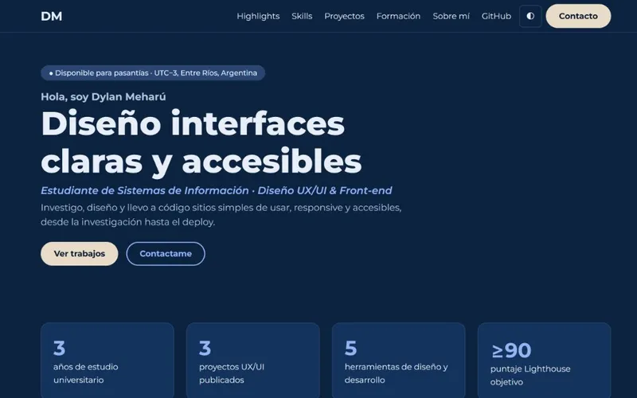
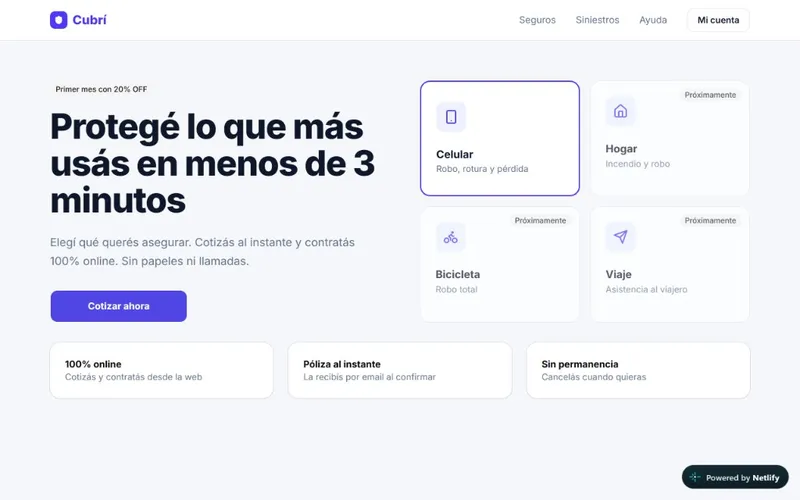
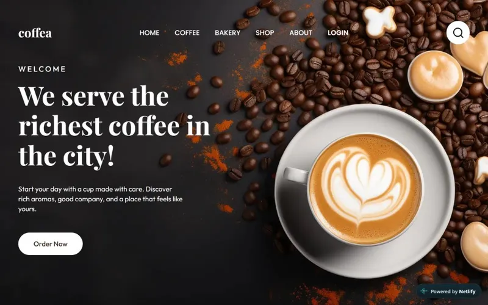

Diseño UX
Investigación, benchmark, arquitectura de información y tests de usabilidad.
- Proto-personas
- Card sorting
- Wireframes
Disponible para pasantías · UTC−3, Entre Ríos, Argentina
Hola, soy Dylan Meharú
Estudiante de Sistemas de Información · Diseño UX/UI & Front-end
Investigo, diseño y llevo a código sitios simples de usar, responsive y accesibles, desde la investigación hasta el deploy.
Investigación, benchmark, arquitectura de información y tests de usabilidad.
Sistemas de diseño con paleta, escala tipográfica y espaciado en múltiplos de 8.
Maquetación mobile-first, semántica y accesible (WCAG 2.2 AA).
Versionado y despliegue continuo para entregar de forma ordenada.
Ordenados del más reciente al más antiguo.

Sitio one-page diseñado y prototipado en Figma, maquetado sin frameworks JS.
Resultado: navegación 100% por teclado y Lighthouse objetivo ≥ 90.

Checkout en pasos para contratar un seguro de celular desde el móvil.
Resultado: flujo de 4 pasos con validación en línea y resumen siempre visible.

Landing responsive en HTML y CSS puro a partir de un diseño de Figma.
Aprendizaje: fidelidad al diseño usando variables CSS, Grid y Flexbox.
UADER · FCyT, Concepción del Uruguay
Facultad de Ciencia y Tecnología
Soy Dylan, estudiante de Sistemas de Información en Concepción del Uruguay. Me interesa el punto donde el diseño y el código se encuentran: que lo diseñado en Figma sea lo que el usuario realmente ve y usa.
Interfaces que se entienden en segundos.
Diseñar para todas las personas y dispositivos.
Del prototipo al código sin perder detalle.
Estoy buscando mi primera experiencia en UX/UI y front-end. Escribime y respondo en menos de 48 horas.